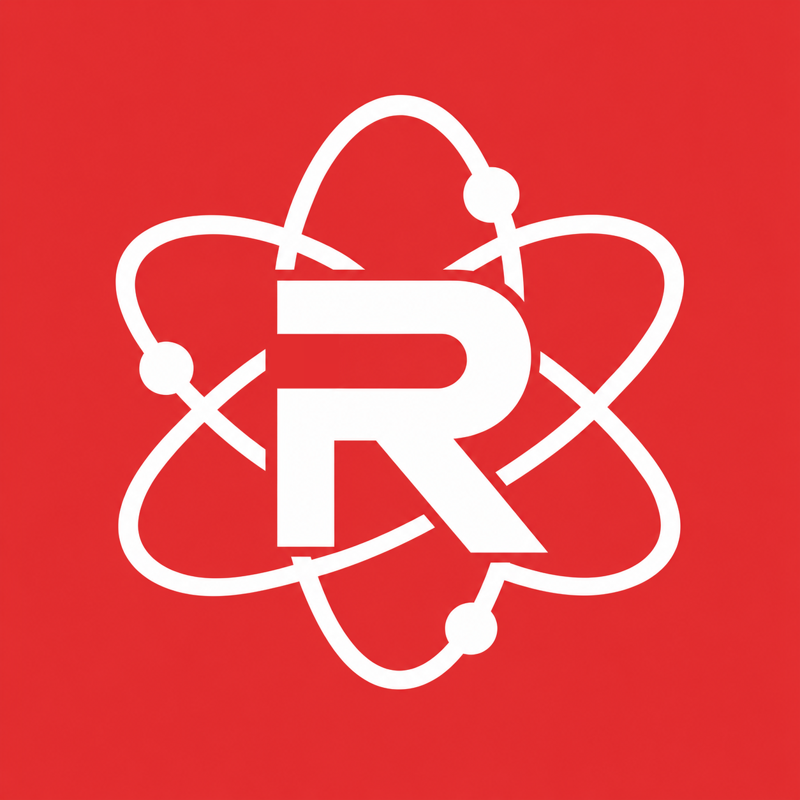

Retrouver nos serveurs.
Un point de repère commun pour réunir nos serveurs Minecraft et retrouver notre communauté.

redlabsLE POINT DE DÉPART DE NOS AVENTURES
Nos serveurs, nos modpacks, nos maps.
Redlabs réunit notre univers Minecraft dans un launcher pensé pour nous simplifier la vie.
UN LAUNCHER. TOUS NOS MONDES.
01 / L’UNIVERS REDLABS
Un point de repère commun pour réunir nos serveurs Minecraft et retrouver notre communauté.
Faire découvrir nos sélections de mods plus simplement, pour passer davantage de temps à jouer ensemble.
Partager nos maps et donner à nos créations une nouvelle aventure, au-delà de notre propre partie.